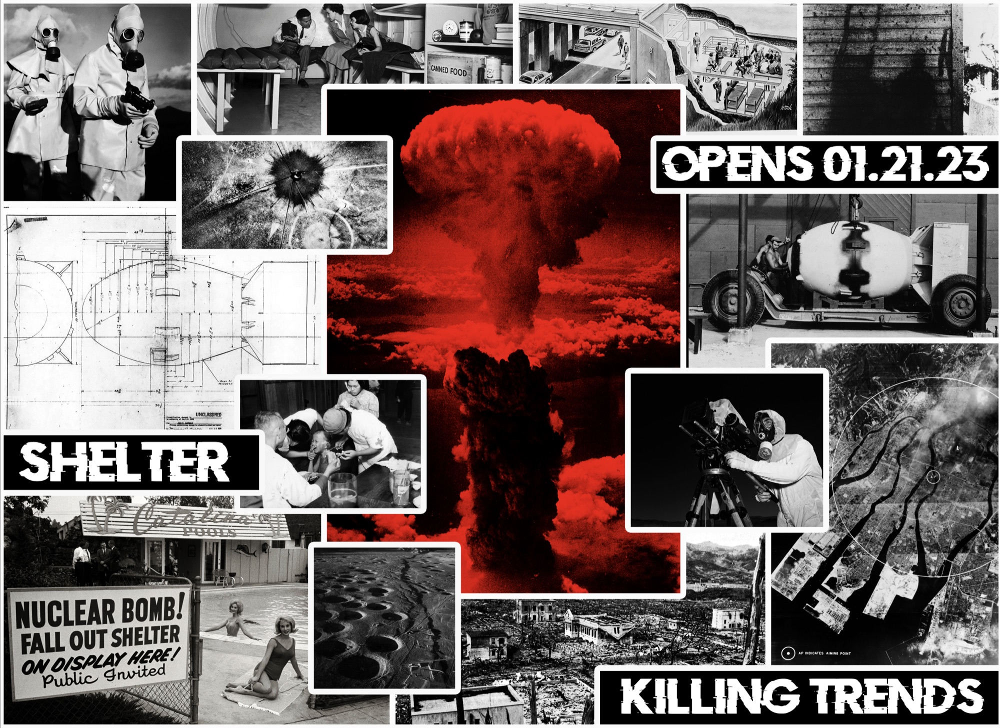

1 project shelter
killing trends presents
immersive installation
las vegas, nv
Shelter.

- size
- 800 sq ft
- setting
- 1950s bunker
- subject
- nevada & the atomic age
An 800-square-foot immersive environment that placed visitors inside a meticulously recreated 1950s-style bunker, prompting them to consider how daily life and personal space might shift under the pressure of global instability. By grounding viewers in a confined, historically inspired setting, the installation made the vast, abstract nature of nuclear destruction feel immediate and human—while also illuminating Nevada’s deep ties to the era of atomic testing.
Take a step inside.
We spoke with cultural historian Brian Paco Álvarez about Shelter’s significance and its lasting impact on both viewers and the cultural fabric of the Las Vegas Valley.
Nov 2021 – Dec 2022
Jan 21, 2023 – Mar 1, 2024
hover or scroll to see it in color